1 Pourquoi a-t-on besoin de méthodes statistiques ?
La plupart des sciences sont comparatives. Les chercheurs ont souvent besoin de savoir si un traitement expérimental particulier a eu un effet, ou s’il existe des différences entre une variable particulière mesurée à plusieurs endroits différents. Par exemple, un nouveau médicament a-t-il un effet sur la tension artérielle, un régime riche en vitamine C réduit-il le risque de cancer du foie chez l’homme, ou existe-t-il une relation entre la couverture végétale et la densité de la population de lapins ? Mais lorsque vous faites ce genre de comparaisons, les différences entre les traitements ou entre les zones échantillonnées peuvent être réelles ou peuvent simplement être le type de variation qui se produit par hasard entre les échantillons d’une même population.
Prenons 2 situations concrètes:
- Dans la première, nous jouons à pile ou face avec 10 pièces. On obtient après un lancer unique de chacune des pièces 3 faces et 7 piles. Pouvons-nous dire si ce lot de pièces est truqué?
- Dans la seconde, on échantillone une population de singes, et on observe 32 femelles et 54 mâles. Y a-t-il réellement plus de mâles dans la population?
Les probabilités vous aident à prendre une décision concernant vos résultats.
1.1 La méthode scientifique
1.1.1 Approche hypothético-déductive
Les caractéristiques essentielles de la vision “hypothético-déductive” de la méthode scientifique (Popper 2005) sont les suivantes : une personne observe ou prélève des échantillons du monde naturel et utilise toutes les informations disponibles pour faire une supposition intuitive et logique, appelée hypothèse, sur la manière dont le système fonctionne. La personne n’a aucun moyen de savoir si son hypothèse est correcte - elle peut s’appliquer ou non. Les prédictions faites à partir de l’hypothèse sont testées, soit par un échantillonnage supplémentaire, soit par des expériences. Si les résultats sont cohérents avec les prédictions, l’hypothèse est retenue. Dans le cas contraire, elle est rejetée et une nouvelle hypothèse est formulée Figure 1.1.
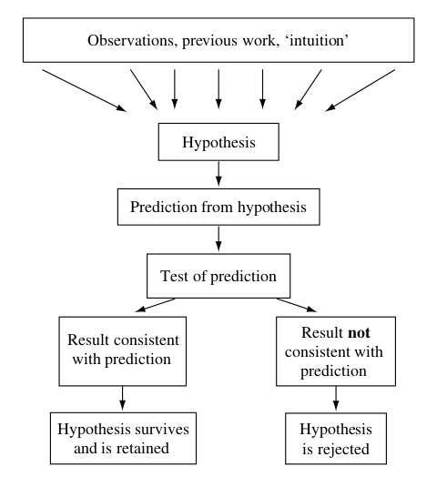
1.1.2 Exemple d’application
Le mille-pattes portugais Ommatioulus moreleti Figure 1.2 a été introduit accidentellement dans le sud de l’Australie depuis le Portugal dans les années 1950.
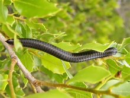
Ce mille-pattes vit dans la litière de feuilles et atteint environ quatre centimètres de long. En l’absence d’ennemis naturels dans son pays d’origine (en particulier les hérissons européens, qui mangent beaucoup de mille-pattes), son nombre a rapidement augmenté pour atteindre les proportions d’un fléau en Australie-Méridionale. Bien qu’il ne cause que très peu de dégâts aux cultures agricoles, O. moreleti est un ravageur “nuisible” sérieux car il envahit les maisons.
En travaillant sur les moyens de réduire les nuisances causées par le mille-pattes portugais, McKillup (McKillup 2011) a remarqué que les propriétaires de maisons qui signalaient de graves problèmes avaient des maisons bien éclairées avec de grandes fenêtres sans rideaux. En revanche, les voisins dont les maisons n’étaient pas aussi bien éclairées et qui fermaient leurs rideaux la nuit signalaient beaucoup moins de mille-pattes à l’intérieur. Le nombre d’O. moreleti par mètre carré était similaire dans la litière de feuilles autour des deux types de maisons.
1.1.2.1 De l’observation à l’hypothèse
A partir de l’exemple précédent, on peut donc en suivant l’approche hypothético-déductive les éléments suivants:
Etape 1: Observation: Cette espèce peste envahit les maisons, particulièrement celles fort éclairées.
Etape 2: Hypothèse: Les millepates sont attirés par la lumière. Hypothèse alternative (\(H_A\)): Les mille-pates sont attirés par la lumière. Hypothèse nulle (\(H_0\)): Les mille-pates ne sont pas attirés par la lumière.
Etape 3: Prédiction à partir de l’hypothèse: Il devrait y avoir plus de millepattes sur des plaques éclairées que sur des plaques non éclairées.
1.1.2.2 Prendre une décision à propos d’une hypothèse
Une fois que l’on dispose du résultat du test expérimental d’une hypothèse, deux choses peuvent se produire :
soit les résultats de l’expérience sont cohérents avec l’hypothèse, donc l’hypothèse est retenu;
ou les résultats ne sont pas cohérents avec l’hypothèse, on peut donc rejeter l’hypothèse.
Si l’hypothèse est rejetée, il est probable qu’elle soit erronée et qu’il faille en proposer une autre.
Si l’hypothèse est retenue, qu’elle résiste à d’autres tests et qu’elle présente une très grande généralité, elle peut devenir une théorie. Mais une théorie n’est jamais qu’une hypothèse très générale qui a résisté à des tests répétés. Il est toujours possible qu’elle soit réfutée à l’avenir.
1.1.2.3 Pourquoi une hypothèse ou une théorie ne peut-elle jamais être prouvée ?
Aucune hypothèse ou théorie ne peut jamais être prouvée - un jour, il peut y avoir des preuves qui la rejettent et conduisent à une explication différente (qui peut inclure toutes les prédictions réussies de l’hypothèse précédente). Par conséquent, nous ne pouvons que falsifier ou réfuter des hypothèses et des théories - nous ne pouvons jamais les prouver.
Les cas de réfutation suivie d’un changement de pensée sont fréquents. En voici deux exemples.
Les chercheurs en médecine pensaient que l’excès d’acidité de l’estomac était responsable de la majorité des ulcères gastriques chez l’homme. Un changement radical s’est opéré lorsque de nombreux ulcères ont guéri à la suite d’une antibiothérapie visant à réduire le nombre de bactéries Helicobacter pylori dans la paroi de l’estomac.
Il existe au moins trois théories sur la manière dont le rein humain produit une solution concentrée d’urine, et la dernière en date n’est pas nécessairement correcte.
1.2 Tester la prédiction à partir de son hypothèse
1.2.2 On peut rarement étudier toute la population
C’est un fait. En biologie, on peut très rarement étudier toute la population. Une population est un ensemble de tous les individus. Un individu est une unité d’observation. Par exemple l’ensemble des mille-pates d’Australie, des poissons d’un lac, des cellules d’un organe, etc.
On étudie donc un échantillon représentatif de la population.
1.2.3 Choix d’un échantillon représentatif
Étant donné qu’un chercheur ne peut généralement pas mesurer chaque individu de la population (à moins qu’il n’étudie les quelques membres restants d’une espèce en voie de disparition), il doit travailler avec un sous-ensemble soigneusement sélectionné contenant plusieurs individus, souvent appelés unités expérimentales, qu’il espère être un échantillon représentatif à partir duquel les caractéristiques de la population peuvent être déduites.
La meilleure façon d’obtenir un échantillon représentatif est généralement de choisir une proportion de la population au hasard - sans biais, chaque unité expérimentale possible ayant une probabilité égale d’être sélectionnée.
Le problème de cette approche est qu’il existe souvent de grandes différences entre les unités expérimentales d’une même population:
- Tout d’abord, même un échantillon aléatoire peut ne pas être un bon représentant de la population dont il est issu Figure 1.3.
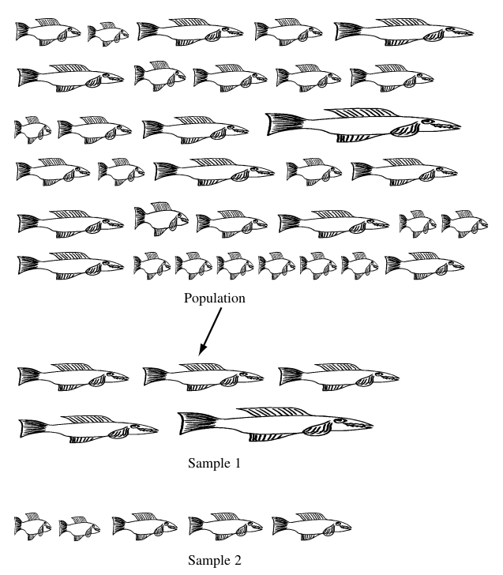
- Deuxièmement, même si deux populations sont très différentes, les échantillons prélevés dans chacune d’elles peuvent être similaires et donner l’impression trompeuse que les populations sont également similaires Figure 1.4.
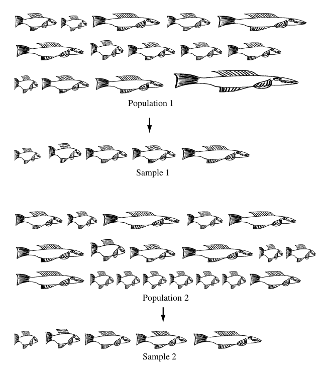
- Enfin, la variation naturelle entre les individus d’un échantillon peut masquer tout effet d’un traitement expérimental. Les variations au sein d’un échantillon (et d’une population) sont souvent si importantes qu’il peut être difficile, voire impossible, de détecter l’effet d’un traitement Figure 1.5.
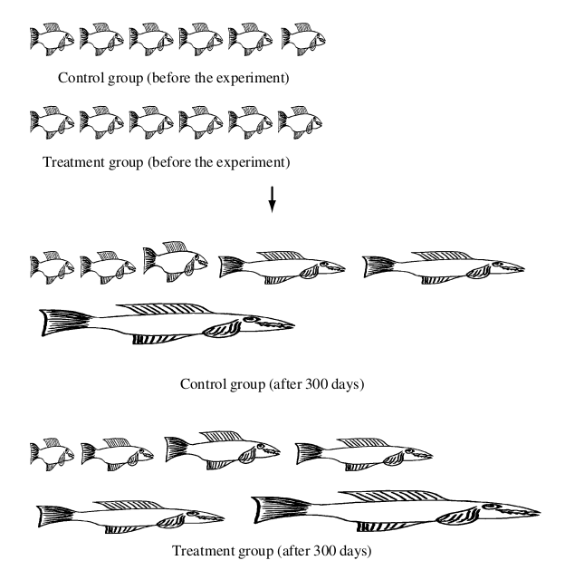
1.2.4 Caractéristiques recherchées pour les mesures/données
L’objectif est d’obtenir des mesures avec la plus grande précision et sans biais.
La précision est déterminée la variabilité des mesures répétées de la même quantité.
Les biais proviennent d’une inadéquation systématique entre la mesure et la valeur réelle.
1.2.4.1 La différence entre mesurer et manipuler
Il existe deux grandes classes d’expériences:
Mesure seule: on mesure les variables d’un système dans son état existant;
Mesure avec manipulation: on modifie/manipule l’état d’un système et on mesure les changements qui en résultent.
1.2.4.2 Les différences entre corrélation et cause
Seule une expérience avec manipulation peut démontrer un lien de cause à effet.
Il faut se méfier des relations observées dans une expérience sans manipulation.
Par exemple, l’humidité du sol peut déterminer à la fois le nombre de souris et le poids du blé. Par conséquent, bien qu’il existe une relation de cause à effet entre l’humidité du sol et chacune des deux variables, celles-ci ne sont pas elles-mêmes liées de manière causale.
1.2.4.3 L’importance de la réplication
Seule la réplication/répétition (prise de plusieurs mesures de la même variable sur des individus indépendants) permet de déterminer la variation due au hasard/
C’est donc un élément vital de toute expérience.
Prenons l’exemple de l’échantillonnage du lac Dark, dans le Wisconsin, pour étudier la densité de la population de crevettes d’eau douce en fonction de la profondeur (McKillup 2011).
Si vous n’échantillonnez qu’à un seul endroit Figure 1.6 (a), les résultats ne donneront pas une bonne indication de l’évolution de la densité de la population de crevettes en fonction de la profondeur du lac. L’échantillonnage doit être répété, mais il est peu utile d’échantillonner de façon répétée une petite zone (par exemple en prenant plusieurs échantillons sous ’’ dans la Figure 1.6 (b)) car cela ne donnera toujours pas une indication précise des changements de la densité de la population en fonction de la profondeur dans l’ensemble du lac (bien qu’il puisse donner une indication très précise des conditions dans cette partie particulière du lac). Ce type d’échantillonnage est un aspect de ce que Hurlbert (1984) a appelé pseudoréplication. Seul le cas numéro de la Figure 1.6 (c) est correcte.
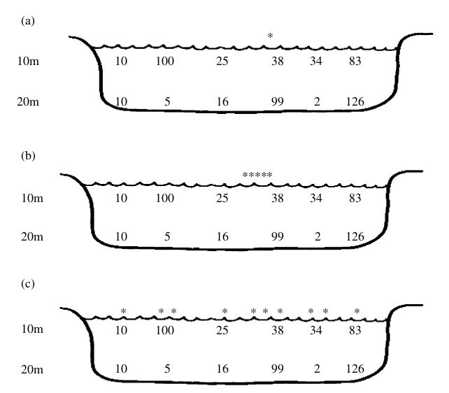
1.2.4.4 La pseudoréplication, un piège à éviter
L’un des pièges les plus redoutables consiste à faire croire que l’on dispose d’un plan expérimental de manipulation reproduit, alors qu’il ne l’est pas du tout.
Présentons ici 4 cas de replication apparentes:
Même si vous disposez de plusieurs réplicats distincts pour chaque traitement (par exemple cinq aquariums de traitement et cinq aquariums de contrôle), la disposition de ces réplicats peut entraîner un manque d’indépendance.
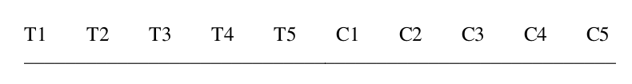
Cas de réplication apparente. Le regroupement des réplicats signifie qu’il n’y a pas d’indépendance entre les contrôles ou les traitements. Réplicats placées en alternance. Si vous avez décidé de contourner le problème du regroupement en plaçant les traitements et les contrôles en alternance (c’est-à-dire en plaçant, de gauche à droite, le traitement 1, le contrôle 1 ; le traitement 2, le contrôle 2 ; le traitement 3, etc…), des problèmes peuvent subsister. ), il peut encore y avoir des problèmes. Par hasard, tous les traitement (ou tous les contrôles) peuvent être soumis à d’autres caractéristiques régulières dont vous n’êtes même pas conscient.
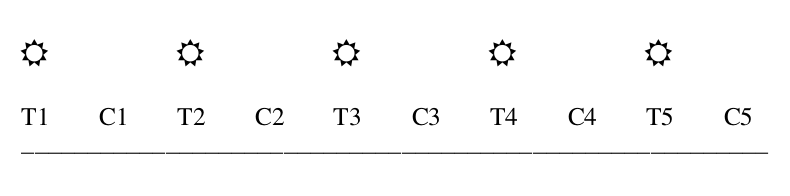
Une disposition régulière des traitements et des contrôles peut, par hasard, correspondre à une caractéristique de l’environnement (ici les très évidents plafonniers) susceptible d’affecter les résultats. Souvent, en raison d’un manque d’équipement, il se peut que vous deviez placer toutes les réplicats d’un traitement à une température donnée dans une seule armoire à température contrôlée, et toutes les répliques d’un traitement à une autre température dans une seule autre armoire. Malheureusement, s’il y a quelque chose de particulier à une armoire, en plus de la température, alors le traitement expérimental ou le traitement de contrôle peut être affecté. Ce schéma est appelé “ségrégation isolante”. 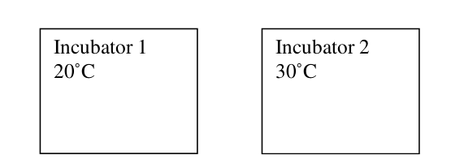
1.2.4.5 Exercice
Identifiez tous les potentiels problèmes qui découle de l’expérimentation ci-dessous.
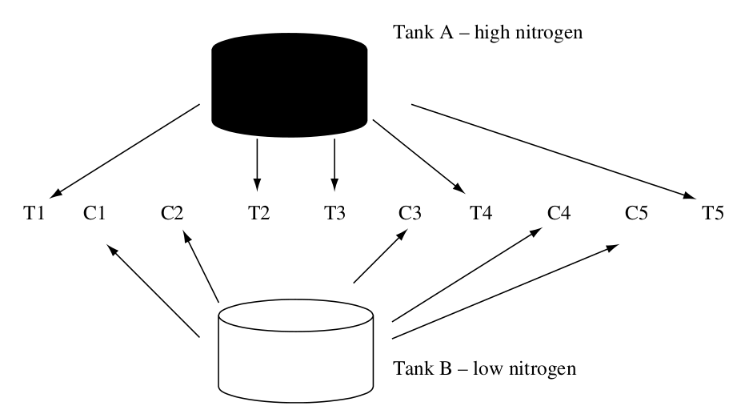
1.2.5 La conception d’une expérience est une affaire de compromis
La conception d’une expérience bien contrôlée, correctement reproduite et réaliste a été décrite par certains chercheurs comme un “art”. Ce n’est pas le cas, mais il y a souvent plusieurs façons de tester la même hypothèse, et donc plusieurs expériences différentes qui pourraient être réalisées.
On a souvent dit qu’il n’y avait pas d’expérience parfaite. L’un des problèmes inhérents est qu’au fur et à mesure qu’une conception s’améliore, le coût en temps et en équipement augmente également, mais la capacité à réaliser réellement l’expérience diminue (figure 4.6). Un modèle absolument parfait peut être impossible à réaliser. Par conséquent, chaque chercheur doit choisir un modèle qui soit “suffisamment bon” tout en restant pratique. Il n’y a pas de règles en la matière - la décision relative à la conception est entre les mains du chercheur et sera finalement jugée par ses collègues qui examineront tout rapport de travail.
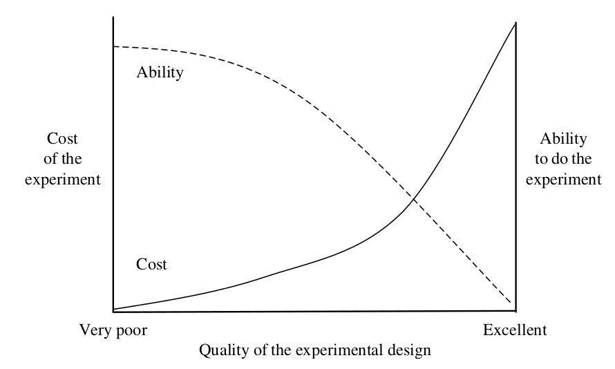
1.2.1 Comment fait-on?
Les statistiques sont un outil d’aide à la décision pour déterminer si les différences observées (i) reflètent une réelle différence entre populations ou (ii) sont dues uniquement au hasard.